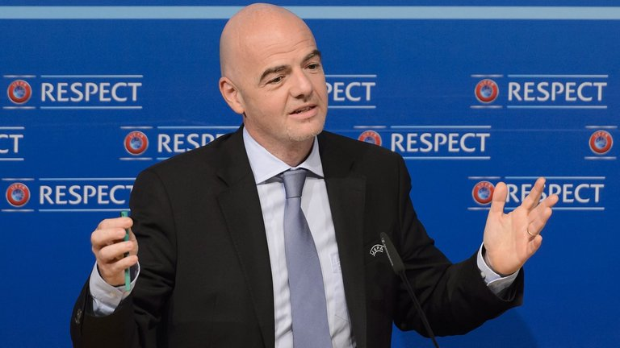

How will new Barcelona signings Arda Turan and Aleix Vidal fit in?
Can Arda Turan and Aleix Vidal improve a Barcelona side that won five trophies in 2015? We look at how the pair might fit in...
Turan and Vidal were signed last summer from Atletico Madrid and Sevilla respectively, but have had to wait until this month to play because of a FIFA transfer ban imposed on Barca for breaching rules over the signings of under-age players.
Turan inherits the No 7 shirt previously worn by Pedro - who joined Chelsea last summer - while Spain wing-back Vidal will wear the No 22 that Dani Alves wore before he switched to No 6.

News
-
Basement boys Levante grabbed a La Liga lifeline by beating fellow strugglers Las Palmas 3-2 at Ciutat de Valencia.
-
Liverpool and Shakhtar Donetsk are still some way apart in negotiations over a fee for striker Alex Teixeira, Sky sources understand.
-
 The owners of the Olympic Stadium have confirmed West Ham could be forced to share their new ground, but sources at the club are confident that will not happen.
The owners of the Olympic Stadium have confirmed West Ham could be forced to share their new ground, but sources at the club are confident that will not happen.
-
 Gianni Infantino's bid to become FIFA's next president has been boosted by the backing of the Central American Football Union (UNCAF).